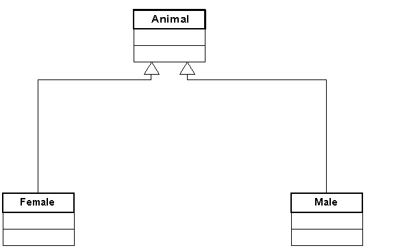
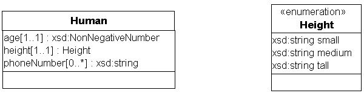
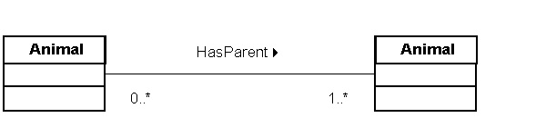
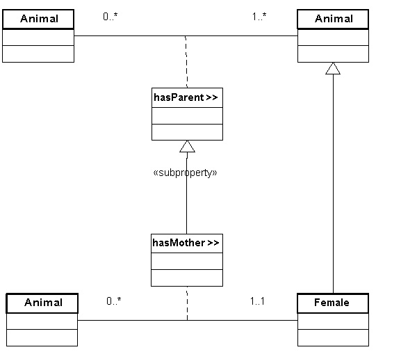
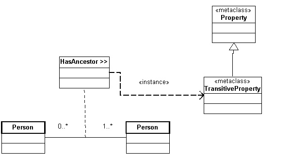
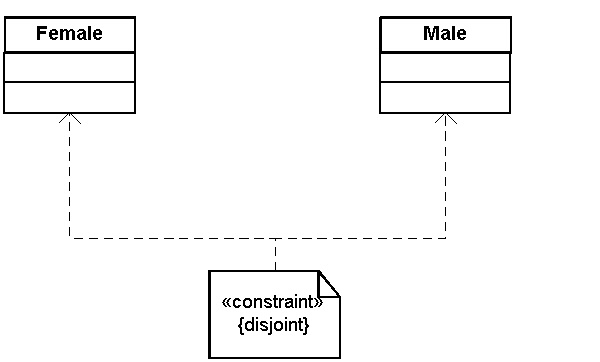
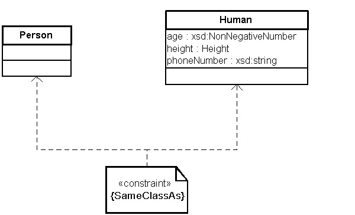
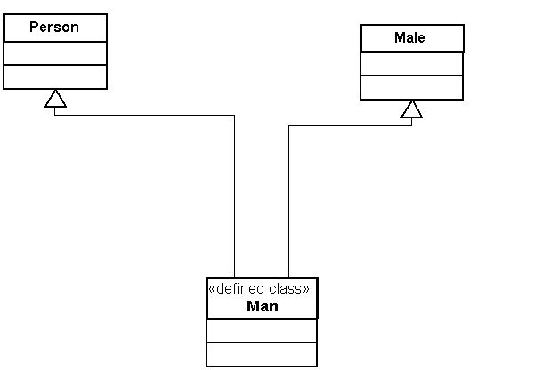
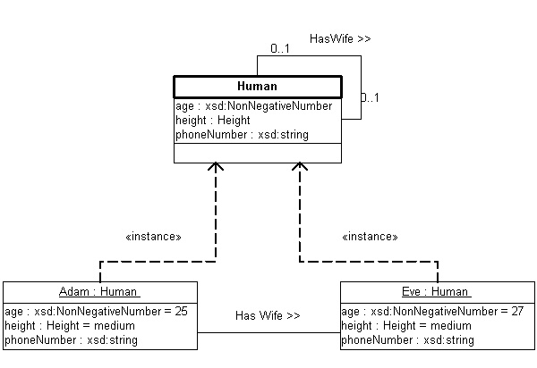
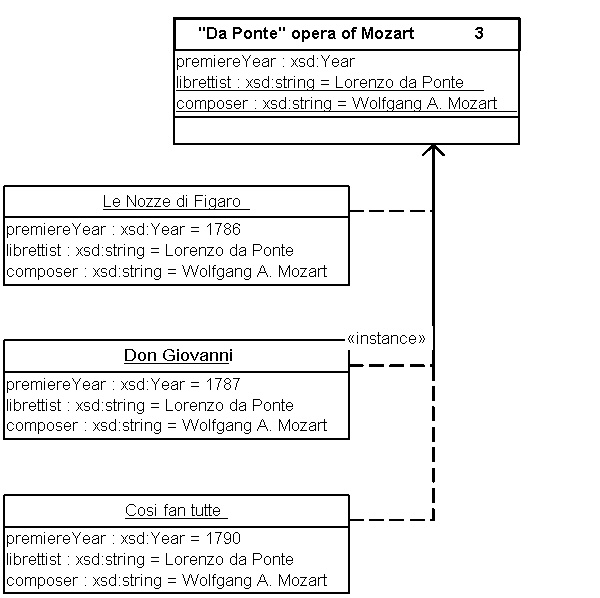

Created:: April 3, 2002
Last update: April 19, 2002
Incomplete draft, intended for internal Webont discussions. Please do not distribute. The note is based on an OWL language proposal for the Webont April 2002 face-to-face meeting in Amsterdam.
@@Add a few lines about ontologies as shared data models, etc.@@
This document assumes basic knowledge of UML class and object diagrams. We use the UML notation as described in the UML User Guide [1]. Note that there are syntax variations between UML sources.
A resource can be anything that has a URI. A literal is a data value, such as a string or a number. Loosely speaking, resource and literal correspond to the UML notion of, respectively, object and value. OWL defines "classes" of resources, similar to UML object classes.
A property defines a directed relationship from a resource to a resource or literal. OWL distinguishes two types of properties: (1) an "object property" linking a resource to a resource, and (2) a "datatype property" linking a resource to a literal. Loosely speaking, an object property corresponds to a UML association and a datatype property to a UML attribute.
[LANG note: proposal to drop "primitive classes" and use "class" instead. This implies that, by default, classes are primitive.]

A class with two subclasses
xsd:NonNegativeNumber refers to
the the XML Schema datatype NonNegativeNumber.
Property cardinality is indicated in UML by a postfix of the attribute
name, e.g. age[1..1] is a single-valued required
attribute, and phoneNumber[0..*] defines an optional and
multi-valued attribute.
Alternatively, OWL
allows the specification of an enumeration of data values as value
range for a property. For this we use the UML notation for an
enumeration datatype [1, p. 59]: the datatype is represented through a
class box labeled with the <<enumeration>>
stereotype. The data values are listed in the attribute box. The
figure below shows an example of this for the enumeration datatype
Height. Prefixing the data values with the datatype (as
done in the figure) is strictly speaking not part of the UML syntax.

A class with three datatype properties
subproperty relation between datatype properties.
[TODO: UniquelyIdentifyingProperty: either add constraint or show as association]
Cardinality (in UML terminology: multiplicity) can be defined for both ends of the relation. This allows specification of the OWL cardinality definitions:
HasParent. The arrowhead following the association name
indicates the direction of the property (in this example the domain and
range are of the same class). The cardinality is specified in the OWL
Lite manner. In UML it would have been easy to restrict the cardinality
of the "to-class" to "2..2".

An object property is shown as an association between classes
<<datatype>> (or one of its
specializations).
The clearest way of modelling a subproperty relation is to model the
associations involved as a UML association class (a standard UML
mechanism for treating associations as classes). The association
classes can then be linked with a UML generalization (as between
regular classes). One can add a custom stereotype
<<subproperty>> for clarity purposes.
The figure below shows an example subproperty
relation. The property HasMother is defined as a
subproperty of HasParent.

An subproperty relation between two object properties represented as UML association classes
TransitiveProperty (probably defined
as a subclass of Property) of which the association is an
instance. The instance-of relation is shown in UML through a
dependency with an <<instance>>
stereotype. The figure below shows an example of this for a
HasAncestor property.

Specification of a transitive property
Disjoint [1, p. 143]. A constraint is shown as
a UML annotation with the stereotype
<<constraint>>. The constraint should be
linked with a dependency relation to the classes concerned.

Disjointness of two classes
SameClassAs
SamePropertyAs and SameIndividualAs can be
defined in a similar fashion, namely by introducing a UML constraint with
the same name (unlike disjoint, these are not predefined
by UML).

Person and Human denote the same class
A defined class is shown as a regular UML class with a stereotype
<<defined class>>.

A "defined class" is shown through a UML class stereotype

Two individuals of the class Human

An enumerated class. The number "3" at the upper-right corer of the class box specifies that this class has exactly three instances.
librettist),
which indicates that the attribute value is the same for all instances of a
class. In the example "Lorenzo da Ponte" is the librettist of all the
opera's in this class and Mozart is the composer
(the fact that these attribute values
are repeated in the figure for each
instance is a bug/feature of the drawing tool used).
[TODO: link class-scoped property to OWL?!]